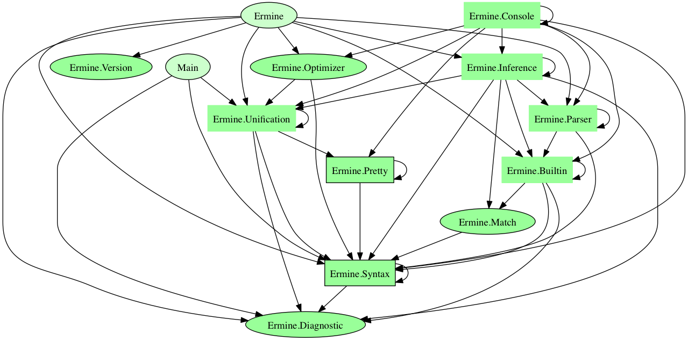

ermine-0.6: Ermine
This is a port of the compiler for the Ermine functional programming language from Scala.
_,-/"---,
;""""""""""; _`;; "" <@`---v
; ::::: :: "' _` ;; " _.../
;" ;; ;;; '",-`:: ;;,'""""
;" ;;;;. ;; ;;; ::` ____
,/ / ;; ;;;______;;; ;;; ::,` / __/_____ _ ( )__ __
/;; _;; ;;; ; ; / _//`__/ ' \/ /`_ \/ -)
| :/ / ,;' ;_ "")/ /___/_/ /_/_/_/_/_//_/\__/ 0.6
; ; / /"""= \;;\\""= Copyright (C) 2010-14 McGraw Hill Financial
;"""';\::""""""= \\"""=
\/"""
For more information, you can watch the Presentation by Edward Kmett at CUFP 2013 about the genesis and goals of Ermine.
Modules
- Ermine
- Builtin
- Console
- Ermine.Diagnostic
- Inference
- Ermine.Monitor
- Parser
- Ermine.Pretty
- Ermine.Syntax
- Ermine.Syntax.Class
- Ermine.Syntax.Core
- Ermine.Syntax.DataType
- Ermine.Syntax.Digest
- Ermine.Syntax.Exposed
- Ermine.Syntax.Global
- Ermine.Syntax.Head
- Ermine.Syntax.Hint
- Ermine.Syntax.Id
- Ermine.Syntax.Instance
- Ermine.Syntax.Kind
- Ermine.Syntax.Literal
- Ermine.Syntax.Module
- Ermine.Syntax.ModuleName
- Ermine.Syntax.Name
- Ermine.Syntax.Pattern
- Ermine.Syntax.Scope
- Ermine.Syntax.Term
- Ermine.Syntax.Type
- Unification
- Ermine.Version